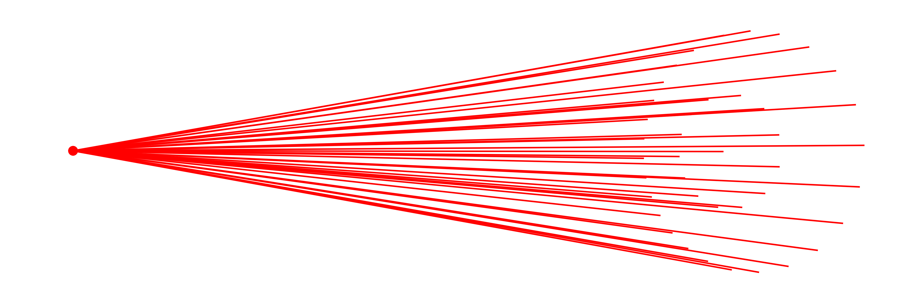
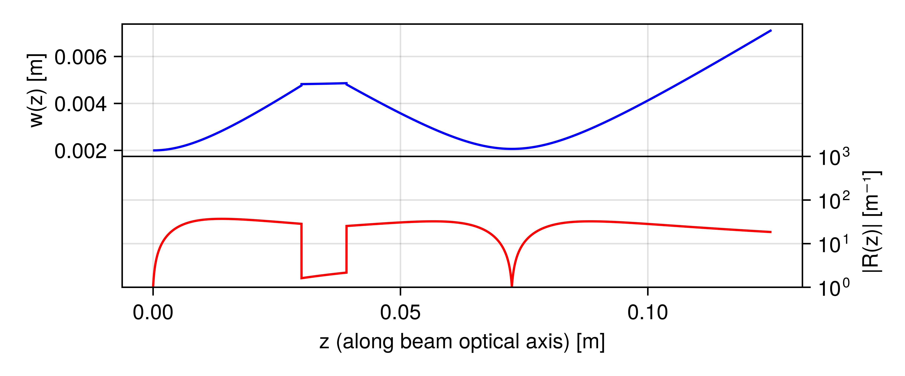

Beams
As mentioned in the Rays section, a beam within the context of this package serves as a data structure for storing collections of rays, forming the backbone of the simulation framework. Beams are intended to be designed as AbstractTrees to allow for ray bifurcations, e.g. in the case of optical elements such as beamsplitters. The solve_system! function relies on this data structure to perform ray tracing computations within optical systems.
To ensure compatibility and extensibility, beam types must adhere to the BeamletOptics.AbstractBeam interface. Refer to its documentation for more information.
Basic beam
A minimal implementation of the BeamletOptics.AbstractBeam type is provided by the Beam. It can be used to store a light path through an optical system. If the beam is split, its children will be recursively traced until all paths are solved.
BeamletOptics.Beam — TypeBeam{T, R <: AbstractRay{T}} <: AbstractBeam{T, R}Stores the rays that are calculated from geometric optics when propagating through an optical system. The Beam type is parametrically defined by the AbstractRay subtype that it stores.
Fields
rays: vector ofAbstractRayobjects, representing the rays that make up the beamparent: reference to the parent beam, if any (Nullableto account for the root beam which has no parent)children: vector of child beams, each child beam represents a branching or bifurcation of the original beam, i.e. beam-splitting
A ray tracing example through an arbitrary system using a Beam is shown below. Individual Ray segments are marked by their starting position and direction. The Beam expander and Miniature microscope tutorial covers the use of the Beam in more detail.
Beam groups
For convenience, the BeamletOptics.AbstractBeamGroup offers a container-like interface for groups of Beams as commonly used in other software packages. The following concrete implementations are currently provided:
julia> BeamletOptics.list_subtypes(BeamletOptics.AbstractBeamGroup);└── BeamletOptics.AbstractBeamGroup ├── CollimatedSource{T, R} where {T<:Real, R<:BeamletOptics.AbstractRay{T}} └── PointSource{T, R} where {T<:Real, R<:BeamletOptics.AbstractRay{T}} At least 2 types have been found.
Refer to the following sections for convenience constructors to generate the sources listed above.
Collimated beam source
The collimated beam source is ideal to model light coming from a focal plane at infinity. This is useful for simulating plane wavefronts. You can define a collimated monochromatic Beam source as follows:
BeamletOptics.CollimatedSource — MethodCollimatedSource(pos, dir, diameter, λ; num_rings, num_rays)Spawns a bundle of collimated Beams at the specified position and direction. The source is modelled as a ring of concentric beam rings around the center beam. The amount of beam rings between the center ray and outer diameter can be specified via num_rings.
Arguments
The following inputs and arguments can be used to configure the CollimatedSource:
Inputs
pos: center beam starting positiondir: center beam starting directiondiameter: outer beam bundle diameter in [m]λ = 1e-6: wavelength in [m], default val. is 1000 nm
Keyword Arguments
num_rings: number of concentric beam rings, default is 10num_rays: total number of rays in the source, default is 100x num_rings
Point beam source
The PointSource type is used to model emission from a spatially localized source that radiates Beams in a range of directions. This is commonly used to simulate conical emission patterns, such as light emerging from a fiber tip or a light source for a lens objective with a known focal distance. You can specify the origin and a propagation direction, which are then used to construct the monochromatic PointSource.
BeamletOptics.PointSource — MethodPointSource(pos, dir, θ, λ; num_rings, num_rays)Spawns a point source of Beams at the specified position and direction. The point source is modelled as a collection of concentric beam fans centered around the center beam. The amount of beam rings between the center ray and half-spread-angle θ can be specified via num_rings.
Arguments
The following inputs and arguments can be used to configure the PointSource:
Inputs
pos: center beam starting positiondir: center beam starting directionθ: half spread angle in radλ = 1e-6: wavelength in [m], default val. is 1000 nm
Keyword Arguments
num_rings: number of concentric beam rings, default is 10num_rays: total number of rays in the source, default is 100x num_rings
Below you can find an exemplary illustration of a PointSource.

Gaussian beamlet
Lasers are common devices in modern optical laboratories. Modeling their propagation through an optical setup can be of interest when planning new experiments. Geometrical ray tracing struggles to capture the propagation of a laser beam correctly, since it can not inherently capture the wave nature of e.g. the Gaussian beam.
The electric field of the $\text{TEM}_{00}$ spatial Gaussian mode can be calculated analytically using the BeamletOptics.electric_field function:
BeamletOptics.electric_field — Methodelectric_field(r, z, E0, w0, w, k, ψ, R) -> ComplexF64Computes the analytical complex electric field distribution of a stigmatic TEM₀₀ Gaussian beam which is described by:
\[E(r,z) = {E_0}\frac{{{w_0}}}{{w(z)}}\exp\left( { - \frac{{{r^2}}}{{w{{(z)}^2}}}} \right)\exp\left(i\left[ {kz + \psi + \frac{{k{r^2}}}{2 R(z)}} \right] \right)\]
Arguments
r: radial distance from beam originz: axial distance from beam originE0: peak electric field amplitudew0: waist radiusw: local beam radiusk: wave number, equal to2π/λψ: Gouy phase shift (defined as $-\text{atan}\left(\frac{z}{z_r}\right)$ !)R: wavefront curvature, i.e. 1/r (radius of curvature)
The evolution of this field through an optical system can be modeled e.g. by the ray transfer matrix formalism using the complex $q$-factor [7, pp. 27]. A Julia-based implementation of this approach can be found in ABCDMatrixOptics.jl. However, in the case of this package another approach will be used.
Complex ray tracing
In 1968 an internal publication at Bell Labs by J. Arnaud introduced the concept of complex rays wherein three geometrical beams can be used to model the propagation of a Gaussian in fundamental mode through a symmetric optical system, i.e. without the Gaussian obtaining astigmatism and/or higher-order abberations. This method is analoguos to the ray transfer matrix based $q$-method [8].
Without extensions of the original method, the following key assumptions must be met such that this method can be applied
- all (complex) beams of the Gaussian in question must intersect the same optical elements
- the optical elements are large compared to the beam (waist)
- the paraxial approximation must hold for each beam
- the Gaussian may not be clipped by hard apertures
- Lagrange invariant must be fulfilled
Various versions of this approach have been implemented under different names in commercial software, most notably FRED and Code V, as well as in open source software, e.g.
- Raypier - based on Cython, maintenance status not known
- Poke - based on Zemax API and Python, maintained by J. Ashcraft et al. [9]
- IfoCAD - maintenance status not known, refer to Wanner et al. [10]
This package implements the above method via the GaussianBeamlet and the BeamletOptics.AstigmaticGaussianBeamlet (Work in progress).
Stigmatic Beamlets
The GaussianBeamlet implements the BeamletOptics.AbstractBeam interface and can be used to model the propagation of a monochromatic Gaussian ($\text{TEM}_{00}$-mode) through optical system where all optics lie on the optical axis, e.g. no tip and/or tilt dealignment, and abberations can be neglected. It is represented by a chief (red), waist (blue) and divergence (green) beam. See below how these beans are placed in relation to the envelope of the Gaussian beam.
BeamletOptics.GaussianBeamlet — TypeGaussianBeamlet{T} <: AbstractBeam{T, Ray{T}}Ray representation of the stigmatic Gaussian beam as per J. Arnaud (1985). The beam quality M2 is fully considered via the divergence angle. The formalism for the beam parameter calculation is based on the following publications:
Jacques Arnaud, "Representation of Gaussian beams by complex rays," Appl. Opt. 24, 538-543 (1985)
and
Donald DeJager and Mark Noethen, "Gaussian beam parameters that use Coddington-based Y-NU paraprincipal ray tracing," Appl. Opt. 31, 2199-2205 (1992)
Fields
chief: aBeamofRays to store the chief raywaist: aBeamofRays to store the waist raydivergence: aBeamofRays to store the divergence rayλ: beam wavelength in [m]w0: local beam waist radius in [m]E0: complex field value in [V/m]parent: reference to the parent beam, if any (Nullableto account for the root beam which has no parent)children: vector of child beams, each child beam represents a branching or bifurcation of the original beam, i.e. beam-splitting
Additional information
Parameters of the beam, e.g. $w(z)$ or $R(z)$, can be obtained through the gauss_parameters function.
A GaussianBeamlet can be constructed via:
BeamletOptics.GaussianBeamlet — MethodGaussianBeamlet(position, direction, λ, w0; kwargs...)Constructs a Gaussian beamlet at its waist with the specified beam parameters.
Arguments
The following inputs and arguments can be used to configure the beamlet:
Inputs
position: origin of the beamletdirection: direction of the beamletλ: wavelength of the beamlet in [m]. Default value is 1000 nm.w0: beam waist (radius) in [m]. Default value is 1 mm.
Keyword Arguments
M2: beam quality factor. Default is 1P0: beam total power in [W]. Default is 1 mWz0: beam waist offset in [m]. Default is 0 msupport:Nullablesupport vector for the construction of the waist and div rays
Additional information
Obtaining the beam parameters
Once a GaussianBeamlet has been traced through an optical system, several parameters might be of interest for further analysis. In order to relate the traced geometrical beams/rays to the Gaussian parameters, the publications of Arnaud, Herloski et al. and DeJager et al. are used [8, 11, 12]. Consider the following system where a Gaussian beam with arbitrary parameters has been traced through a lens using the approach outlined in the Complex ray tracing section.
The user can obtain parameters such as the beam waist radius, the radius of curvature and more using the BeamletOptics.gauss_parameters function. Below the local waist radius and curvature $R = r^{-1}$ have been calculated for the example above.

Astigmatic Polarized Beamlets
- Assumptions
- homogeneous polarization distribution across waist
- Lagrange invariant